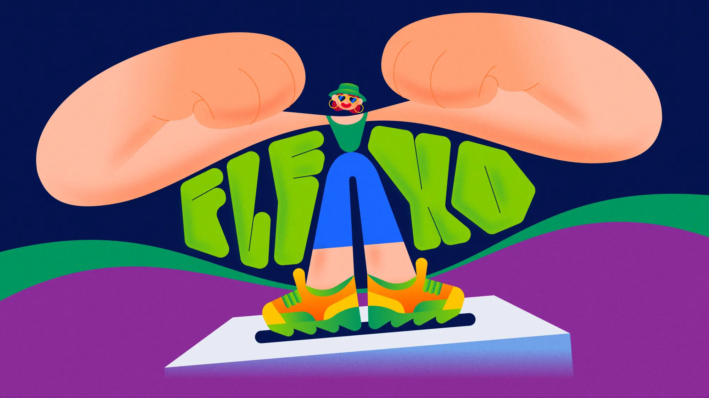

All-new photography innovations and pricing updates
Everyone loves the feeling of a minty-fresh mouth, but some children would rather have their teeth pulled than pick up a toothbrush. Faced with this challenge, Gabriele Calvi achieved the seemingly impossible. His animated music video, “Mom, How Fresh I Am,” made oral hygiene cool for Italy's youth and helped his client, Silvercare, give its communications a “fresh” touch.
The cheerful film also made Calvi the 2024 Adobe MAX Creativity Award honoree for Animation and was nominated as Best Music Video by the Motionographer Motion Awards. Created with the help of Adobe Illustrator and Adobe After Effects, “Mom, How Fresh I Am” is a reminder that great storytelling doesn't have to be serious to make an impact. It's also a testament to Calvi's sense of humor and the creative possibilities that can be unlocked when artists don't take themselves too seriously.
Sweet sounds and passion projects
Calvi fell in love with creativity at an early age, inspired by his favorite animated series, the latest MTV music videos, and hours spent playing video games. It was during college that he was first exposed to digital design and began nurturing his talents as a designer. Within a few years of graduating, he found himself working with major advertising agencies like BBDO and TBWA, and has since built an impressive roster of clients, from Barilla, to Google, to Spotify.
Now more than 10 years into his freelance career, Calvi reflects on how keeping an open mind and building a diverse portfolio have contributed to his success. While many artists develop a signature style and creative niche, Calvi thrives on uncertainty and the prospect of learning something new with every project he takes on.
For instance, while the designs he developed for “Mom, How Fresh I Am” are silly and joyful, Calvi is equally proud of the dark and moody music video he created for Copenhagen-based band, TownPortal. A long-time fan of TownPortal's music, and a musician himself, Calvi had the opportunity to create a music video for their new song “Vanitas.” The result was not only a hit with TownPortal, but it was also chosen as a Staff Pick on Vimeo and won a Motionographer Motion Award for Best Music Video, putting Calvi's talent in the spotlight and propelling his career to new heights.
Calvi's love of music comes through in all of his work and makes projects like “Vanitas” and “Mom, How Fresh I Am” feel like labors of love. “The rhythm and flow of creating music videos, and the sense of freedom I felt working on the projects, is similar to what I feel when writing an original song with my band,” he says.
Spinning artistic freedom into animation gold
Reflecting on what made “Mom, How Fresh I Am” special, Calvi recalls the mix of joy and anxiety he felt when he first received the brief for the project. With just the music and lyrics (by Mastermaind and Barf) provided and a request from his client to create “something crazy,” Calvi was given free rein to develop the characters, animations, and visual style for “Mom, How Fresh I Am” based entirely on his creative instincts.
“I had the freedom to treat "Mom, How Fresh I Am" like a personal project, which was refreshing but also a bit stressful. Thankfully, I got to work with a very open-minded client, plus the song was too cool for me not to take on the challenge.”
-Gabriele Calvi
Calvi designed every element for “Mom, How Fresh I Am” using Illustrator. From there, he moved all of his vector illustrations into After Effects to animate and create the final film. Calvi is a long-time user of Adobe creative tools and continues to embrace new features and capabilities that enhance his artistic process.
For instance, the Create Nulls from Paths panel in After Effects has been a gamechanger for Calvi. The feature allows him to import multiple shapes into After Effects from Illustrator, then link them to points that can be modified independently. That's given him more control than ever over his animations while cutting hours from his video workflows.
An eye-catching illustration from “Mom, How Fresh I Am.”
The joy of playing while making a living
In addition to relying on Adobe technologies to create his art, Calvi is a long-time user and proponent of Behance to showcase his work. As a student, he would spend hours on the platform scrolling through other artists' creations and dreaming about the day one of his own projects would be showcased on the site.
Success finally came with “Vanitas,” gaining Calvi widespread attention that helped him expand his client base from Italy to the rest of the world. “Behance has played a huge role in helping me build my career. To this day, thinking about the GIFs and illustrations that will go up on a project's profile has become an integral part of my process,” he says.
Calvi's experiences have made him appreciate the importance of self-promotion for artists and designers, even if it goes against the instinct of creators who prefer to keep their heads down and focus on their work. The key, he argues, is to combine the joy of creating and the financial realities of professional life.
“As designers, we have the opportunity to play while making a living. It's important to have fun and go a bit crazy sometimes, but it's when you can match that with the business side of the equation that the work becomes truly rewarding.”
-Gabriele Calvi
Learn more about Gabriele Calvi, the award-winning “Mom, How Fresh I Am,” and other favorite projects on Instagram.
To see the full list of Adobe MAX 2024 Creativity Award honorees, visit the Awards webpage.